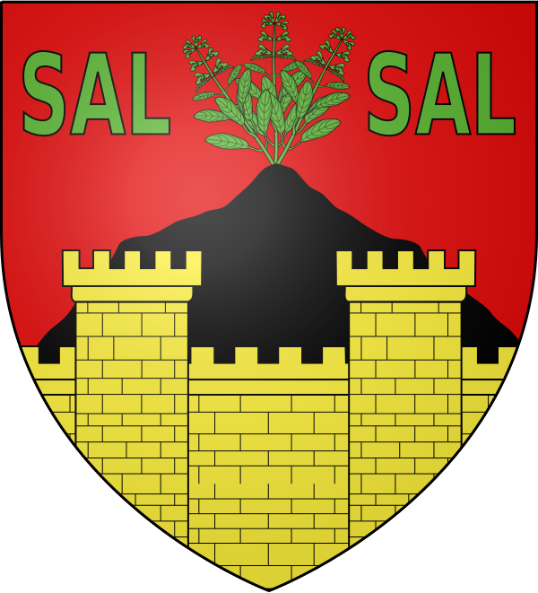

SauveLe berceau français de l'espadrille


⟹ Plus Beau Village de France · Espadrille · Gorges ⟸

Le territoire de Sauve appartient à la vallée du Vidourle, modeste fleuve côtier au régime torrentiel typiquement méditerranéen, qui a longtemps organisé la vie économique de ce pays de piémont, entre garrigues nîmoises et premiers contreforts cévenols.
Un oppidum antique, un castrum dès 898. Le site accueille dès l'époque gallo-romaine l'oppidum de Mus, aujourd'hui classé monument historique, avant que le nom même de Sauve n'apparaisse dans les textes sous la forme d'un castrum mentionné dès 898. Une abbaye est fondée peu après par les seigneurs du lieu, donnant naissance à l'enclos abbatial autour duquel se structure le développement médiéval de la cité.
Les « satrapes » de Sauve et Sommières. Du XIe au XIIIe siècle, la puissante famille des Bermond d'Anduze, qui possède également la ville stratégique voisine de Sommières, domine Sauve et se qualifie, selon les chroniques de l'époque, du curieux et rare titre d'origine perse de « satrapes de Sauve ». Cette période faste voit la construction du Pont Vieux et des remparts de la ville, tandis que Sauve, alors plus peuplée que Nîmes, obtient dès l'an 1000 le privilège de frapper sa propre monnaie à l'hôtel de la Monnaie, encore visible aujourd'hui. Au XIIIe siècle, la seigneurie passe aux Roquefeuil, descendants des Anduze, avant d'être confisquée par le roi de France puis rachetée par les évêques de Maguelone.
Un village fortifié aux portes des Cévennes. Sauve occupe un site remarquable à l'entrée des gorges du Vidourle, dans un environnement calcaire spectaculaire, ce qui en a fait dès le Moyen Âge une place fortifiée disposant de remparts et d'un habitat dense adossé à la falaise ; au XVIIIe siècle, la ville comptait pas moins de huit portes fortifiées, à la fois lieux de communication et de protection.
La guerre des Camisards et le Castellas. Aux portes des Cévennes, Sauve devient un bastion protestant lors de la guerre des Camisards au début du XVIIIe siècle : l'église abbatiale et le château voisin de Roquevaire sont incendiés, tandis que de nouvelles fortifications, dont le Castellas qui domine encore aujourd'hui la ville, sont édifiées pour faire face à la révolte. L'église actuelle est reconstruite au cours du XVIIIe siècle, et des casernes, portant encore aujourd'hui l'inscription « cazernes » sur leur fronton, sont bâties en 1759 pour loger les dragons du roi chargés de surveiller la population.
La naissance de l'espadrille française. Grâce à l'abondance locale du chanvre, cultivé dans les prairies humides du Vidourle, et à la présence de tresseurs de corde spécialisés, Sauve devient au XIXe siècle le principal centre français de fabrication de l'espadrille, chaussure à semelle de corde tressée, activité qui emploie durablement une large partie de la population.
Comme la vallée voisine de l'Hérault autour de Ganges, la moyenne vallée du Vidourle participe pleinement, à partir des XVIe et XVIIe siècles, à l'essor de la sériciculture languedocienne : mûriers en alignement, magnaneries dans les mas et petites filatures rythment alors la vie rurale, avant que cette activité ne décline au tournant du XXe siècle.

Un savoir-faire industriel reconnu. Plusieurs manufactures s'installent au village pour produire l'espadrille à grande échelle, avant que la concurrence internationale ne réduise fortement cette activité au XXe siècle, dont le souvenir reste aujourd'hui valorisé par un écomusée dédié ; le village abrite également le Conservatoire de la Fourche, seul lieu de France à fabriquer encore des fourches agricoles traditionnelles en bois de micocoulier, savoir-faire dont l'origine remonterait au XIe siècle, sinon aux invasions sarrasines des VIIe et VIIIe siècles.
Des enfants du pays devenus célèbres. Sauve est la ville natale du fabuliste Jean-Pierre Claris de Florian, du médecin Jean Astruc et de l'aéronaute Joseph-Eusèbe Sivel, trois figures qui ont porté le nom du village bien au-delà des frontières du Gard.
Les gorges et la grotte des Camisards. Les gorges du Vidourle, en amont du village, recèlent plusieurs grottes, dont l'une aurait servi de refuge aux Camisards pendant la guerre de résistance protestante du début du XVIIIe siècle, ancrant Sauve dans la même mémoire huguenote que les Cévennes voisines.
Le pays du Vidourle, comme l'ensemble de la Vaunage et des garrigues nîmoises voisines, adhère massivement à la Réforme protestante dès le XVIe siècle et conserve aujourd'hui encore une identité huguenote affirmée, héritée des guerres de Religion puis de la répression consécutive à la révocation de l'édit de Nantes en 1685.
Le Vidourle, réputé pour ses crues soudaines et parfois dévastatrices que la mémoire locale a surnommées « vidourlades », a marqué à plusieurs reprises l'histoire des villages de sa vallée ; la dernière crue majeure, survenue au début du XXIe siècle, rappelle la puissance de ce petit fleuve côtier au régime typiquement méditerranéen, tantôt asséché en été, tantôt torrentiel après de violents épisodes pluvieux cévenols.

Aujourd'hui, Sauve conserve une identité marquée par ce passé : village fortifié, berceau de l'espadrille française, la commune s'inscrit pleinement dans la zone Vidourle & Vaunage, entre mémoire patrimoniale et vie locale contemporaine. Cette continuité, entre héritage et vie quotidienne, fait aujourd'hui tout l'intérêt d'une visite attentive à l'histoire du lieu.
Sauve a tressé son destin dans le chanvre du Vidourle : c'est ici, aux portes des gorges calcaires, qu'est née l'espadrille française, devenue depuis un emblème du sud de la France.
Synthèse historique — L'Âme des Régions